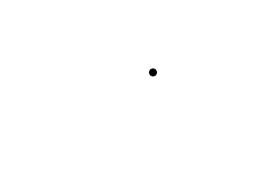

在这之前，我们必须捕获帧率来防止点移动得过快。这里，我们将基于时间来移动点，而不再是基于帧率，从而让它无论在哪种帧率下都具有相同的移动速度。
//点的特性 const int DOT_WIDTH = 20; const int DOT_HEIGHT = 20; const int DOT_VEL = 200;
这里我们定义了与点相关的宽度、高度和速度常量。
既然我们在做与时间相关的移动，而不是与帧率相关，我们必须改变我们处理速度的方式。我们将基于每秒而不是基于每帧来计算速度。在原本的"运动"教程中，我们让点每帧移动10像素。由于程序运行在20帧每秒的帧率下，点也就是以200像素每秒的速度运动。
所以现在点的速度是200像素每秒。
既然我们在做与时间相关的移动，而不是与帧率相关，我们必须改变我们处理速度的方式。我们将基于每秒而不是基于每帧来计算速度。在原本的"运动"教程中，我们让点每帧移动10像素。由于程序运行在20帧每秒的帧率下，点也就是以200像素每秒的速度运动。
所以现在点的速度是200像素每秒。
//点
class Dot
{
private:
//点的X、Y坐标
float x, y;
//点的速度
float xVel, yVel;
public:
//初始化变量
Dot();
//处理按键并调整速度
void handle_input();
//移动点
void move( Uint32 deltaTicks );
//在屏幕上显示点
void show();
};
这里我们有我们的老朋友Dot类的另一个修订版本。
现在坐标和速度是浮点数。这是因为有可能点在一帧内移动小于1像素的距离。
假定这个程序在一台电脑上以300fps的帧率运行。为了让点以200pps的速度移动，点就必须以2/3像素每帧的速度移动。
当然我们还有视频和输入函数。
现在坐标和速度是浮点数。这是因为有可能点在一帧内移动小于1像素的距离。
假定这个程序在一台电脑上以300fps的帧率运行。为了让点以200pps的速度移动，点就必须以2/3像素每帧的速度移动。
译者注：fps = Frame Per Second，帧每秒； pps = Pixel Per Second，像素每秒。
我们还有一个传入时间差的move()函数。对于那些没有学过物理的童鞋来说，注意一下这里的时间差就是时间的变化值。我们需要获得自上一帧以来经过的时间，从而决定点需要移动多远。
当然我们还有视频和输入函数。
void Dot::handle_input()
{
//如果一个按键被按下
if( event.type == SDL_KEYDOWN )
{
//调整速度
switch( event.key.keysym.sym )
{
case SDLK_UP: yVel -= DOT_VEL; break;
case SDLK_DOWN: yVel += DOT_VEL; break;
case SDLK_LEFT: xVel -= DOT_VEL; break;
case SDLK_RIGHT: xVel += DOT_VEL; break;
}
}
//如果一个按键被松开
else if( event.type == SDL_KEYUP )
{
//调整速度
switch( event.key.keysym.sym )
{
case SDLK_UP: yVel += DOT_VEL; break;
case SDLK_DOWN: yVel -= DOT_VEL; break;
case SDLK_LEFT: xVel += DOT_VEL; break;
case SDLK_RIGHT: xVel -= DOT_VEL; break;
}
}
}
就像你看到的那样，输入处理和以前的差不多。
void Dot::move( Uint32 deltaTicks )
{
//想左或向右移动点
x += xVel * ( deltaTicks / 1000.f );
//如果点向左移动得太多
if( x < 0 )
{
//移回去
x = 0;
}
//或者向右移动得太多
else if( x + DOT_WIDTH > SCREEN_WIDTH )
{
//移回去
x = SCREEN_WIDTH - DOT_WIDTH;
}
//向上或向下移动点
y += yVel * ( deltaTicks / 1000.f );
//如果点向上移动得太多
if( y < 0 )
{
//移回去
y = 0;
}
//如果点向下移动得太多
else if( y + DOT_HEIGHT > SCREEN_HEIGHT )
{
//移回去
y = SCREEN_HEIGHT - DOT_HEIGHT;
}
}
这里是我们处理移动的地方。
我们接收时间差作为参数，它将告诉我们自上一次移动后经过的时间。如果程序是以100fps运行的，时间差就会是1/100秒。如果程序以200fps运行，时间差就会是1/200秒。如果程序以150fps运行，时间差就会是1/150秒……
计算移动距离的公式是这样：
使用基于时间移动能确保点始终以200pps的速度移动。
注意我们改变了我们的函数来确保点在边界内。不像以前那样使用撤销动作，这里我们在点抛出屏幕时把它拉回屏幕内。
我们接收时间差作为参数，它将告诉我们自上一次移动后经过的时间。如果程序是以100fps运行的，时间差就会是1/100秒。如果程序以200fps运行，时间差就会是1/200秒。如果程序以150fps运行，时间差就会是1/150秒……
计算移动距离的公式是这样：
速度（像素/秒） * 自上一帧经过的时间（秒）
所以如果程序以200fps运行：200 pps * 1/200 秒 = 1 像素
如果程序以100fps运行：200 pps * 1/100 秒 = 2 像素
……使用基于时间移动能确保点始终以200pps的速度移动。
注意我们改变了我们的函数来确保点在边界内。不像以前那样使用撤销动作，这里我们在点抛出屏幕时把它拉回屏幕内。
void Dot::show()
{
//显示点
apply_surface( (int)x, (int)y, dot, screen );
}
这里你可以看到
show()函数基本没变，除了一点，我们必须将浮点数转换为整数来进行blit。
//退出标识
bool quit = false;
//将要用到的点
Dot myDot;
//跟踪自上次渲染所经过的时间
Timer delta;
//初始化
if( init() == false )
{
return 1;
}
//加载文件
if( load_files() == false )
{
return 1;
}
//启动时间差计时器
delta.start();
这是
伴随着我们的点，我们还创建了一个计时器对象来测量帧之间的时间差。我们在进入主循环前启动了计时器。
main()函数的顶部。
伴随着我们的点，我们还创建了一个计时器对象来测量帧之间的时间差。我们在进入主循环前启动了计时器。
//当用户还未退出
while( quit == false )
{
//当有事件需要处理
while( SDL_PollEvent( &event ) )
{
//为点处理事件
myDot.handle_input();
//如果用户叉掉了窗口
if( event.type == SDL_QUIT )
{
//退出程序
quit = true;
}
}
//移动点
myDot.move( delta.get_ticks() );
//重启时间差计时器
delta.start();
在我们主循环的顶部，我们处理了事件并移动了点。
点移动后，我们重启了时间差计时器，所以我们可以跟踪自上次移动后经过的时间。
点移动后，我们重启了时间差计时器，所以我们可以跟踪自上次移动后经过的时间。
//用白色填充屏幕
SDL_FillRect( screen, screen->clip_rect, SDL_MapRGB( screen->format, 0xFF, 0xFF, 0xFF ) );
//在屏幕上显示点
myDot.show();
//更新屏幕
if( SDL_Flip( screen ) == -1 )
{
return 1;
}
}
然后我们按正常的方式处理图像。
就像你看到的那样，我们没有捕获帧率，但由于我们的运动是基于时间的，所以多少帧率都无所谓。
就像你看到的那样，我们没有捕获帧率，但由于我们的运动是基于时间的，所以多少帧率都无所谓。